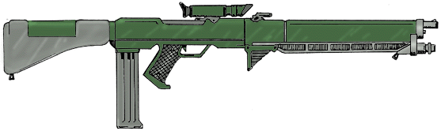
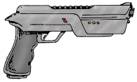

BARD PAPER: VERA7601
BARD PAPER: VERA7601 | Home | Traveller | BARD | VERA |
Gravitics Small Arms
BARD PAPER: VERA7601 | Home | Traveller | BARD | VERA |
Gravitics weapons employ basically the same technology as Gauss weapons. Thanks to TL-16 miniaturization, gravitic technology can be employed in lieu of Gauss magnetic fields to accelerate rounds to a much higher velocity, thereby enhancing penetration and damage to the target.
The most popular versions of gravitics weapons, listed below, are generally slightly heavier than their lower tech Gauss counterparts. The intent of the designers was to leverage the gravitic technology to maximize lethality.
Although the weapons are designed to use standard Gauss ammunition, TL-16 HE and HEAP rounds are available. The high-tech rounds provide increased damage value (+1 DMG each). Gravitics rifles, carbines and pistols are some of the most coveted weapons among soldiers, mercenaries and security forces in the Vincennes interstellar region. Vincenzi arms manufacturers can hardly keep them in stock. The largest purchaser of the weapons is the Regency Army, which purchases several million each year.
Neighboring governments have voiced their concerns recently about the proliferation of these weapons and the dangers they pose to private citizens. The Vincennes Trade and Commerce Commission has so far averted major sanctions, but the controversy rages on.

TL: 16
Ammo: 4x20mm/60
Muzzle Energy: 9000 joules (Tranq: 5400 joules), required energy: 12600 joules
Weapon Length: 84 cm
Weapon Weight: 5.453 kg loaded, 5.428 empty (includes weight of empty box magazine)
Weapon Price: Cr1449 (Cr2149 with inertial compensator)
Magazine Weight: 1.93 kg loaded, 1.91 kg empty
Magazine Price: Cr4
Ammunition Price: Cr0.01 (Dart), Cr0.02 (HE, Tranq), Cr0.03 (HEAP) (0.03 HE and 0.04 HEAP for TL-16 rounds)
Ammunition Weight: 0.5 grams per round
Features: Bayonet lug, optic sights, integral laser sight, RAM rifle grenade adapter
| - Recoil - | ||||||||
| Round | ROF | Dam Val | Pen Rtg | Bulk | Magazine | SS | Burst | Short Range |
| 4x20mm/60 Dart | 5/10 | 6 | 1-3-5 | 5 | 50 | 1 | 3/6 | 175 (152) |
| 4x20mm/60 HE | 5/10 | 6 (7**) | Nil | 5 | 50 | 1 | 3/6 | 131 (114) |
| 4x20mm/60 HEAP | 5/10 | 6 (7**) | 2-2-2 | 5 | 50 | 1 | 3/6 | 131 (114) |
| 4x20mm/60 Tranq | 5/10 | -1* | Nil | 5 | 50 | 1 | 3/6 | 30 (30) |
* 1D6-1 points of damage plus tranq effect (p. 350 TNE main rulebook). ** TL-16 rounds.
Range in parentheses is unrounded iron sight range.

TL: 16
Ammo: 4x20mm/28
Muzzle Energy: 2025 joules (Tranq: 1215 joules), required energy: 2835 joules
Weapon Length: 25 cm
Weapon Weight: 1.445 kg loaded, 1.439 empty (includes weight of empty box magazine)
Weapon Price: Cr549 (Cr849 with laser sight)
Magazine Weight: 0.32 kg loaded, 0.31 kg empty
Magazine Price: Cr1
Ammunition Price: Cr0.01 (Dart), Cr0.02 (HE, Tranq), Cr0.03 (HEAP) (0.03 HE and 0.04 HEAP for TL-16 rounds)
Ammunition Weight: 0.5 grams per round
Features: None
| - Recoil - | ||||||||
| Round | ROF | Dam Val | Pen Rtg | Bulk | Magazine | SS | Burst | Short Range |
| 4x20mm/28 Dart | 5/10 | 3 | 1-nil | 1 | 35 | 2 (1 with LS) | 4 (3 with LS) | 23 |
| 4x20mm/28 HE | 5/10 | 3 (4**) | Nil | 1 | 35 | 2 (1 with LS) | 4 (3 with LS) | 17 |
| 4x20mm/28 HEAP | 5/10 | 3 (4**) | 2-2-2 | 1 | 35 | 2 (1 with LS) | 4 (3 with LS) | 17 |
| 4x20mm/60 Tranq | 5/10 | -1* | Nil | 1 | 35 | 2 (1 with LS) | 4 (3 with LS) | 14 |
* 1D6-1 points of damage plus tranq effect (p. 350 TNE main rulebook). ** TL-16 rounds. LS=laser sight.